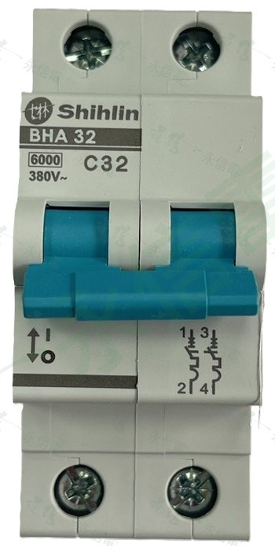
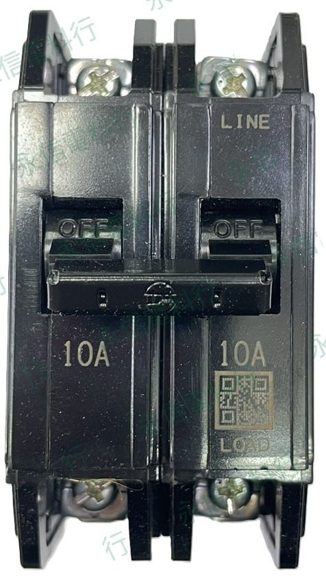
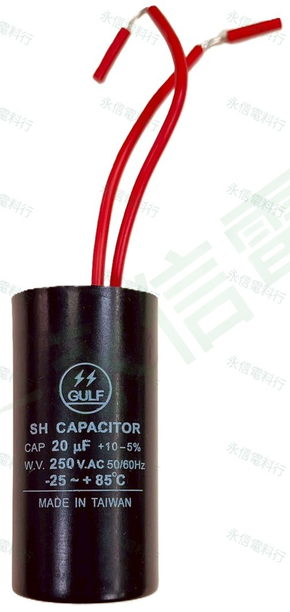

後續建置
漏電保護裝置
依感度電流、延時特性、波形類型與回路用途選型。
POWER DISTRIBUTION & PROTECTION
依保護功能與品牌整理小型斷路器、無熔絲斷路器、漏電保護裝置與配電相關元件。
PROTECTION DEVICES
目前已建立士林電機 BHA 小型斷路器、士林 BH 無熔絲斷路器、海灣電氣 GULF 運轉電容，以及僑電 QDQ 保險絲／保險絲座；其他 ELCB／RCD 與保護元件將依實際商品資料逐步新增。

 士林電機 SHIHLIN
士林電機 SHIHLINBHA31、BHA32、BHA33 軌道式小型斷路器，共 14 個規格商品頁。
查看系列與規格 →
士林電機 SHIHLINBH 系列 2P、3P 共 15 個規格商品頁，依額定電流整理。
查看系列與規格 →依感度電流、延時特性、波形類型與回路用途選型。
從保護裝置類型、環境漏電與變頻器干擾開始檢查。
閱讀技術文章 →
CG、CG4、CL、CL8 系列，依容量與電壓標示整理商品照片。
查看系列與規格 →
CT-10、E16 防爆型陶瓷保險絲與 CT-FB101LA 保險絲座，依系列與安培數整理。
查看系列與規格 →